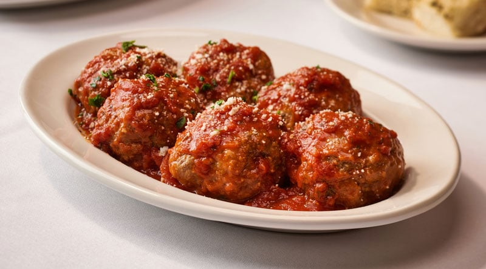

Meatballs

Description
Whether you're looking for a spaghetti sauce with meatballs for your next spaghetti night, a meatball sub, or any other Italian recipe, you have just found the best recipe on the internet. This simple recipe shows you how to make homemade meatballs with a delicious and fresh tomato sauce.
We promise you will never go back to store-bought meatballs or spaghetti sauce ever again! We recommend getting a big pot ready because you'll want to double (or triple) this recipe.
Ingredients
Meatballs:
- 1 pound lean ground beef
- 1 cup fresh bread crumbs
- 1 tablespoon dried parsley
- 1 tablespoon grated Parmesan cheese
- 1/4 teaspoon ground black pepper
- 1/8 teaspoon garlic powder
- 1 egg, beaten
Sauce:
- 3/4 cup chopped onion
- 5 cloves garlic, minced
- 1/4 cup olive oil
- 2 (28 ounce) cans whole peeled tomatoes
- 2 teaspoons salt
- 1 teaspoon white sugar
- 1 bay leaf
- 1 (6 ounce) can tomato paste
- 3/4 teaspoon dried basil
- 1/2 teaspoon ground black pepper
Steps
- Gather all ingredients
- In a large bowl, combine ground beef, bread crumbs, parsley, Parmesan, 1/4 teaspoon black pepper, garlic powder and beaten egg.
Mix well and form into 12 balls. Store, covered, in refrigerator until needed.
- In a large saucepan over medium heat, saute onion and garlic in olive oil until onion is translucent.
- Stir in tomatoes, salt, sugar and bay leaf. Cover, reduce heat to low, and simmer 90 minutes.
- Stir in tomato paste, basil, 1/2 teaspoon pepper and meatballs and simmer 30 minutes more.
- Serve hot and enjoy!